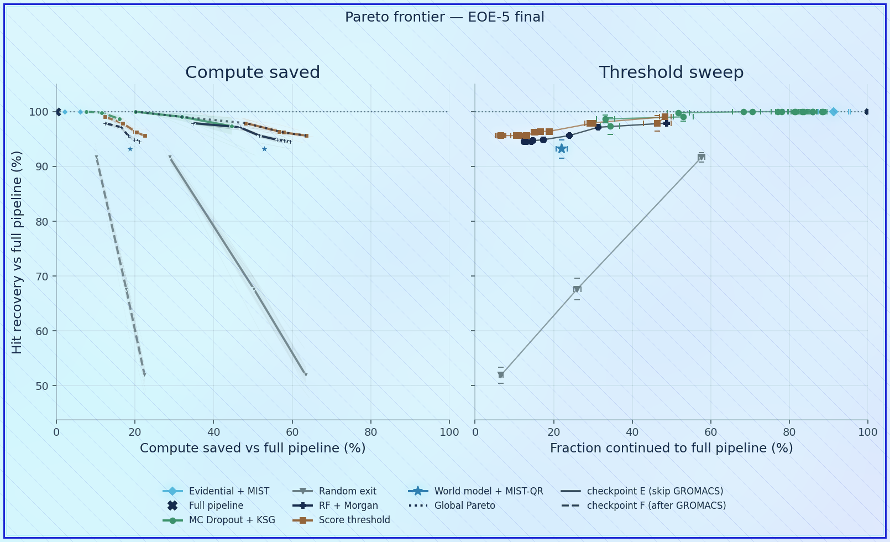
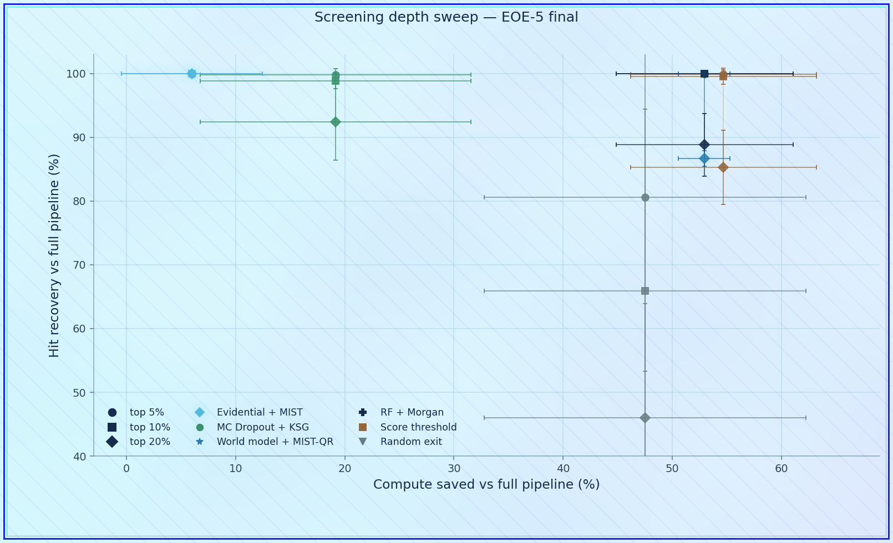
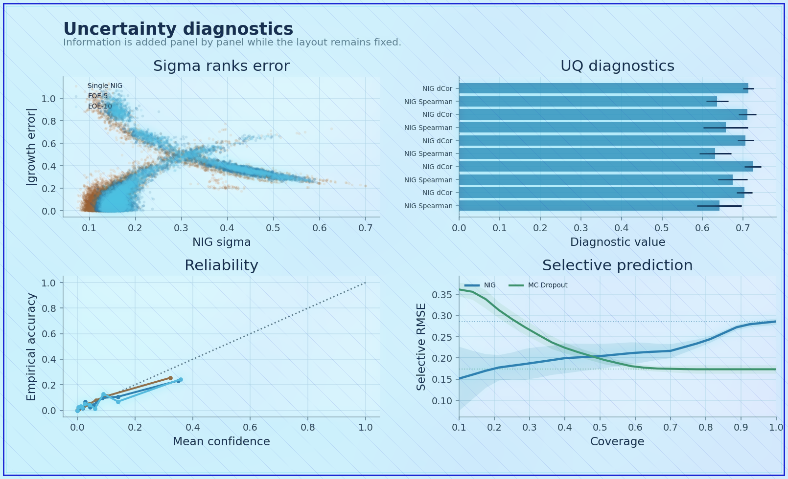
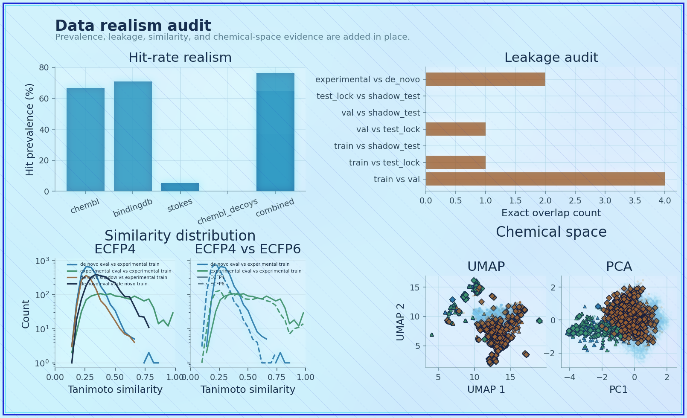

PROTO-NOOS: Rational Compute Allocation in Antibiotic Discovery via Mutual Information and Uncertainty Quantification
A shared PROTO-NOOS ML report describing how uncertainty, mutual information, and evidence-aware prioritisation can guide which antibiotic-discovery candidates receive deeper and more expensive computational treatment.
Abstract
PROTO-NOOS ML treats early antibiotic-discovery screening as a compute-allocation problem. Rather than sending every generated molecule through the most expensive modelling stages, the workflow uses uncertainty-aware and information-theoretic descriptors to decide which candidates deserve deeper analysis. The study frames model confidence, evidence disagreement, and expected information gain as explicit ranking signals that can be combined with physicochemical, structural, and biological descriptors. This creates a practical bridge between high-throughput approximation and targeted downstream simulation, where scarce compute is spent on candidates whose evaluation is expected to reduce uncertainty most meaningfully.
Visual Summary
The figure set presents the poster narrative as a sequence: building a Pareto view, measuring screening depth, exposing uncertainty, and checking how realistic the available data are for downstream decisions.

Pareto construction
Candidate prioritisation is framed as a trade-off among informative but imperfect screening signals.

Screening depth
Compute allocation is adjusted to the expected value of learning from each candidate.

Uncertainty story
Uncertain predictions become routing signals for selecting candidates that need better evidence.

Data realism
The workflow separates useful ranking information from overconfident claims about biological activity.
Poster and Manuscript
The poster provides the compact visual version of the compute-allocation argument, while the manuscript records the motivation and modelling assumptions for the PROTO-NOOS ML branch.